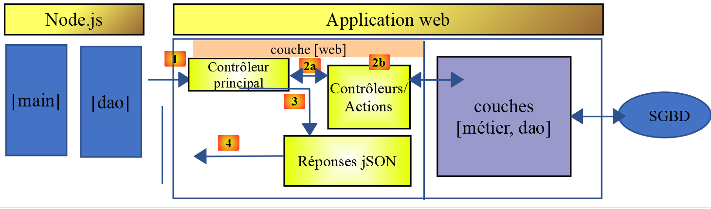
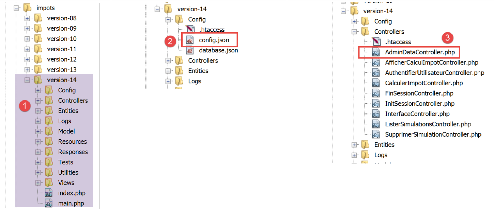
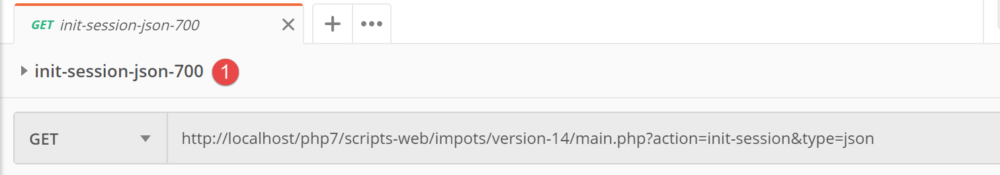
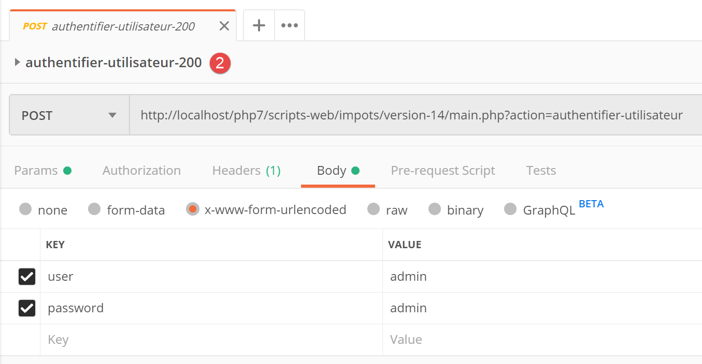
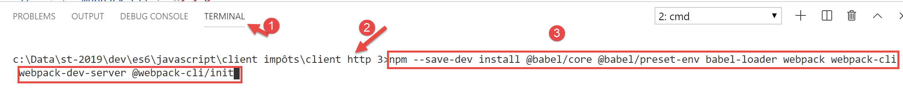
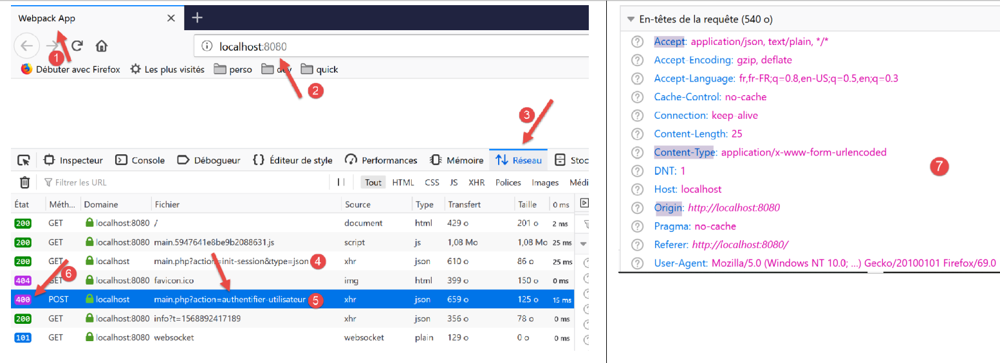

14. عملاء HTTP لـ JavaScript لخدمة حساب الضرائب
14.1. مقدمة
نقترح هنا كتابة عميل [Node.js] للإصدار 14 من خدمة حساب الضرائب. ستكون بنية العميل/الخادم كما يلي:

سنقوم بفحص نسختين من العميل:
- سيكون للإصدار 1 من العميل الهيكل الطبقي [main, dao] التالي:

- سيتضمن الإصدار 2 من العميل بنية [main، business logic، DAO]. سيتم نقل طبقة [business logic] من الخادم إلى العميل:

14.2. عميل HTTP 1

كما ذكرنا سابقًا، يطبق عميل HTTP 1 بنية العميل/الخادم التالية:

سنقوم بتنفيذ:
- طبقة [DAO] كفئة؛
- طبقة [main] كنص برمجي يستخدم هذه الفئة؛
14.2.1. طبقة [dao]
سيتم تنفيذ طبقة [dao] بواسطة الفئة التالية [Dao1.js]:
'use strict';
// imports
import qs from 'qs'
class Dao1 {
// manufacturer
constructor(axios) {
// axios library for queries HTTP
this.axios = axios;
// session cookie
this.sessionCookieName = "PHPSESSID";
this.sessionCookie = '';
}
// init session
async initSession() {
// query options HHTP [get /main.php?action=init-session&type=json]
const options = {
method: "GET",
// URL parameters
params: {
action: 'init-session',
type: 'json'
}
};
// execute query HTTP
return await this.getRemoteData(options);
}
async authentifierUtilisateur(user, password) {
// query options HHTP [post /main.php?action=authenticate-user]
const options = {
method: "POST",
headers: {
'Content-type': 'application/x-www-form-urlencoded',
},
// body of POST
data: qs.stringify({
user: user,
password: password
}),
// URL parameters
params: {
action: 'authentifier-utilisateur'
}
};
// execute query HTTP
return await this.getRemoteData(options);
}
// tAX CALCULATION
async calculerImpot(marié, enfants, salaire) {
// query options HHTP [post /main.php?action=calculate-tax]
const options = {
method: "POST",
headers: {
'Content-type': 'application/x-www-form-urlencoded',
},
// body of POST [married, children, salary]
data: qs.stringify({
marié: marié,
enfants: enfants,
salaire: salaire
}),
// URL parameters
params: {
action: 'calculer-impot'
}
};
// execute query HTTP
const data = await this.getRemoteData(options);
// result
return data;
}
// list of simulations
async listeSimulations() {
// query options HHTP [get /main.php?action=lister-simulations]
const options = {
method: "GET",
// URL parameters
params: {
action: 'lister-simulations'
},
};
// execute query HTTP
const data = await this.getRemoteData(options);
// result
return data;
}
// list of simulations
async supprimerSimulation(index) {
// query options HHTP [get /main.php?action=suppress-simulation&number=index]
const options = {
method: "GET",
// URL parameters
params: {
action: 'supprimer-simulation',
numéro: index
},
};
// execute query HTTP
const data = await this.getRemoteData(options);
// result
return data;
}
async getRemoteData(options) {
// for the session cookie
if (!options.headers) {
options.headers = {};
}
options.headers.Cookie = this.sessionCookie;
// execute query HTTP
let response;
try {
// asynchronous request
response = await this.axios.request('main.php', options);
} catch (error) {
// the [error] parameter is an exception instance - it can take various forms
if (error.response) {
// the server response is in [error.response]
response = error.response;
} else {
// error restart
throw error;
}
}
// response is the entire HTTP response from the server (HTTP headers + response itself)
// retrieve the session cookie if it exists
const setCookie = response.headers['set-cookie'];
if (setCookie) {
// setCookie is an array
// look for the session cookie in this table
let trouvé = false;
let i = 0;
while (!trouvé && i < setCookie.length) {
// look for the session cookie
const results = RegExp('^(' + this.sessionCookieName + '.+?);').exec(setCookie[i]);
if (results) {
// the session cookie is stored
// eslint-disable-next-line require-atomic-updates
this.sessionCookie = results[1];
// we found
trouvé = true;
} else {
// next item
i++;
}
}
}
// the server response is in [response.data]
return response.data;
}
}
// class export
export default Dao1;
- هنا نستخدم ما تعلمناه في القسم المرتبط، حيث قدمنا مكتبة [axios]، التي تسمح لنا بإجراء طلبات HTTP في كل من [node.js] والمتصفح. سننظر بشكل خاص إلى البرنامج النصي في القسم المرتبط؛
- الأسطر 9–15: منشئ الفئة. ستحتوي هذه الفئة على ثلاث خصائص:
- [axios]: كائن [axios] المستخدم لإجراء طلبات HTTP. يتم تمرير هذا بواسطة كود الاستدعاء؛
- [sessionCookieName]: اعتمادًا على الخادم، يكون لملف تعريف الارتباط الخاص بالجلسة أسماء مختلفة. هنا، هو [PHPSESSID]؛
- [sessionCookie]: ملف تعريف ارتباط الجلسة الذي يرسله الخادم ويخزنه العميل؛
- الأسطر 53–76: تقوم الدالة غير المتزامنة [calculateTax] بإجراء الطلب [post /main.php?action=calculate-tax] عن طريق إرسال المعلمات [married, children, salary]. وتُرجع سلسلة JSON المرسلة من الخادم ككائن JavaScript؛
- الأسطر 79–92: تقوم الدالة غير المتزامنة [listSimulations] بإجراء الطلب [get /main.php?action=list-simulations]. وتُرجع سلسلة JSON المرسلة من الخادم ككائن JavaScript؛
- الأسطر 95–109: تقوم الدالة غير المتزامنة [deleteSimulation] بإرسال الطلب [get /main.php?action=delete-simulation&number=index]. وتُرجع سلسلة JSON المرسلة من الخادم ككائن JavaScript؛
- السطر 121: يتم استخدام الترميز [this.axios] لأن كائن [axios] الذي تم تمريره إلى المنشئ قد تم تخزينه في الخاصية [this.axios]؛
- السطر 161: يتم تصدير فئة [Dao1] حتى يمكن استخدامها؛
14.2.2. البرنامج النصي [main1.js]
يقوم البرنامج النصي [main1.js] بإجراء سلسلة من المكالمات إلى الخادم باستخدام فئة [Dao1]:
- تهيئة جلسة JSON؛
- المصادقة باستخدام [admin, admin]؛
- طلب ثلاثة حسابات ضريبية؛
- طلب قائمة المحاكاة؛
- حذف واحدة منها؛
الرمز كما يلي:
// import axios
import axios from 'axios';
// dao1 class import
import Dao from './Dao1';
// asynchronous function [main]
async function main() {
// axios configuration
axios.defaults.timeout = 2000;
axios.defaults.baseURL = 'http://localhost/php7/scripts-web/impots/version-14';
// layer instantiation [dao]
const dao = new Dao(axios);
// using the [dao] layer
try {
// init session
log("-----------init-session");
let response = await dao.initSession();
log(response);
// authentication
log("-----------authentifier-utilisateur");
response = await dao.authentifierUtilisateur("admin", "admin");
log(response);
// tax calculations
log("-----------calculer-impot x 3");
response = await Promise.all([
dao.calculerImpot("oui", 2, 45000),
dao.calculerImpot("non", 2, 45000),
dao.calculerImpot("non", 1, 30000)
]);
log(response);
// list of simulations
log("-----------liste-des-simulations");
response = await dao.listeSimulations();
log(response);
// deleting a simulation
log("-----------suppression simulation n° 1");
response = await dao.supprimerSimulation(1);
log(response);
} catch (error) {
// we log the error
console.log("erreur=", error.message);
}
}
// log jSON
function log(object) {
console.log(JSON.stringify(object, null, 2));
}
// execution
main();
تعليقات
- السطر 2: استيراد مكتبة [axios]؛
- السطر 4: استيراد فئة [Dao]؛
- السطر 7: الدالة [main] التي تتواصل مع الخادم هي دالة غير متزامنة؛
- السطران 9-10: التكوين الافتراضي لطلبات HTTP التي سيتم إرسالها إلى الخادم:
- السطر 9: [timeout] لمدة ثانيتين؛
- السطر 10: جميع عناوين URL مسبوقة بعنوان URL الأساسي للإصدار 14 من خادم حساب الضرائب؛
- السطر 12: تم إنشاء طبقة [Dao]. يمكن استخدامها الآن؛
- الأسطر 46-48: تُستخدم وظيفة [log] لعرض سلسلة JSON لكائن JavaScript بطريقة منسقة: عموديًا مع مسافة بادئة بمقدار مسافتين (المعلمة الثالثة)؛
- الأسطر 15-18: تهيئة جلسة JSON؛
- الأسطر 19-22: المصادقة؛
- الأسطر 23–30: يُطلب إجراء ثلاثة حسابات ضريبية بشكل متوازٍ. وبفضل [await Promise.all]، يتم تعليق التنفيذ حتى يتم الحصول على النتائج الثلاثة جميعها؛
- الأسطر 31–34: قائمة المحاكاة؛
- الأسطر 35–38: حذف محاكاة؛
- الأسطر 39–42: معالجة أي استثناءات؛
نتائج التنفيذ هي كما يلي:
[Running] C:\myprograms\laragon-lite\bin\nodejs\node-v10\node.exe -r esm "c:\Data\st-2019\dev\es6\javascript\client impôts\client http 1\main1.js"
"-----------init-session"
{
"action": "init-session",
"état": 700,
"réponse": "session démarrée avec type [json]"
}
"-----------authentifier-utilisateur"
{
"action": "authentifier-utilisateur",
"état": 200,
"réponse": "Authentification réussie [admin, admin]"
}
"-----------calculer-impot x 3"
[
{
"action": "calculer-impot",
"état": 300,
"réponse": {
"marié": "oui",
"enfants": "2",
"salaire": "45000",
"impôt": 502,
"surcôte": 0,
"décôte": 857,
"réduction": 126,
"taux": 0.14
}
},
{
"action": "calculer-impot",
"état": 300,
"réponse": {
"marié": "non",
"enfants": "2",
"salaire": "45000",
"impôt": 3250,
"surcôte": 370,
"décôte": 0,
"réduction": 0,
"taux": 0.3
}
},
{
"action": "calculer-impot",
"état": 300,
"réponse": {
"marié": "non",
"enfants": "1",
"salaire": "30000",
"impôt": 1687,
"surcôte": 0,
"décôte": 0,
"réduction": 0,
"taux": 0.14
}
}
]
"-----------liste-des-simulations"
{
"action": "lister-simulations",
"état": 500,
"réponse": [
{
"marié": "oui",
"enfants": "2",
"salaire": "45000",
"impôt": 502,
"surcôte": 0,
"décôte": 857,
"réduction": 126,
"taux": 0.14,
"arrayOfAttributes": null
},
{
"marié": "non",
"enfants": "2",
"salaire": "45000",
"impôt": 3250,
"surcôte": 370,
"décôte": 0,
"réduction": 0,
"taux": 0.3,
"arrayOfAttributes": null
},
{
"marié": "non",
"enfants": "1",
"salaire": "30000",
"impôt": 1687,
"surcôte": 0,
"décôte": 0,
"réduction": 0,
"taux": 0.14,
"arrayOfAttributes": null
}
]
}
"-----------suppression simulation n° 1"
{
"action": "supprimer-simulation",
"état": 600,
"réponse": [
{
"marié": "oui",
"enfants": "2",
"salaire": "45000",
"impôt": 502,
"surcôte": 0,
"décôte": 857,
"réduction": 126,
"taux": 0.14,
"arrayOfAttributes": null
},
{
"marié": "non",
"enfants": "1",
"salaire": "30000",
"impôt": 1687,
"surcôte": 0,
"décôte": 0,
"réduction": 0,
"taux": 0.14,
"arrayOfAttributes": null
}
]
}
[Done] exited with code=0 in 0.516 seconds
14.3. عميل HTTP 2

تتمثل بنية عميل HTTP2 فيما يلي:

لقد نقلنا الطبقة [business] من الخادم إلى عميل JavaScript. على عكس ما فعلناه في دورة PHP7، لن تحتاج الطبقة [main] إلى المرور عبر الطبقة [business] للوصول إلى الطبقة [DAO]. سنستخدم هاتين الطبقتين كمكونات متخصصة:
- تمر الطبقة [الرئيسية] عبر الطبقة [DAO] كلما احتاجت إلى بيانات موجودة على الخادم؛
- تطلب الطبقة [الرئيسية] من الطبقة [الأعمال] إجراء حسابات الضرائب؛
- طبقة [الأعمال] مستقلة عن طبقة [DAO] ولا تستدعيها أبدًا؛
14.3.1. فئة [Business] في JavaScript
تم وصف جوهر فئة [Business] في PHP في المقالة المرتبطة. إنها جزء معقد إلى حد ما من الكود الذي نستذكره هنا، ليس لشرحه، بل لنتمكن من ترجمته إلى JavaScript:
<?php
// namespace
namespace Application;
class Metier implements InterfaceMetier {
// dao layer
private $dao;
// tax administration data
private $taxAdminData;
//---------------------------------------------
// setter couche [dao]
public function setDao(InterfaceDao $dao) {
$this->dao = $dao;
return $this;
}
public function __construct(InterfaceDao $dao) {
// a reference is stored on the [dao] layer
$this->dao = $dao;
// recover data for tax calculation
// method [getTaxAdminData] may throw a ExceptionImpots exception
// we then let it go back to the calling code
$this->taxAdminData = $this->dao->getTaxAdminData();
}
// tAX CALCULATION
// --------------------------------------------------------------------------
public function calculerImpot(string $marié, int $enfants, int $salaire): array {
// $marié : yes, no
// $enfants : number of children
// $salaire: annual salary
// $this->taxAdminData: tax administration data
//
// we check that we have the correct data from the tax authorities
if ($this->taxAdminData === NULL) {
$this->taxAdminData = $this->getTaxAdminData();
}
// tax calculation with children
$result1 = $this->calculerImpot2($marié, $enfants, $salaire);
$impot1 = $result1["impôt"];
// tax calculation without children
if ($enfants != 0) {
$result2 = $this->calculerImpot2($marié, 0, $salaire);
$impot2 = $result2["impôt"];
// application of the family allowance ceiling
$plafonDemiPart = $this->taxAdminData->getPlafondQfDemiPart();
if ($enfants < 3) {
// $PLAFOND_QF_DEMI_PART euros for the first 2 children
$impot2 = $impot2 - $enfants * $plafonDemiPart;
} else {
// $PLAFOND_QF_DEMI_PART euros for the first 2 children, double for subsequent children
$impot2 = $impot2 - 2 * $plafonDemiPart - ($enfants - 2) * 2 * $plafonDemiPart;
}
} else {
$impot2 = $impot1;
$result2 = $result1;
}
// we take the highest tax
if ($impot1 > $impot2) {
$impot = $impot1;
$taux = $result1["taux"];
$surcôte = $result1["surcôte"];
} else {
$surcôte = $impot2 - $impot1 + $result2["surcôte"];
$impot = $impot2;
$taux = $result2["taux"];
}
// calculation of any discount
$décôte = $this->getDecôte($marié, $salaire, $impot);
$impot -= $décôte;
// calculation of any tax reduction
$réduction = $this->getRéduction($marié, $salaire, $enfants, $impot);
$impot -= $réduction;
// result
return ["impôt" => floor($impot), "surcôte" => $surcôte, "décôte" => $décôte, "réduction" => $réduction, "taux" => $taux];
}
// --------------------------------------------------------------------------
private function calculerImpot2(string $marié, int $enfants, float $salaire): array {
// $marié : yes, no
// $enfants : number of children
// $salaire: annual salary
// $this->taxAdminData: tax administration data
//
// number of shares
$marié = strtolower($marié);
if ($marié === "oui") {
$nbParts = $enfants / 2 + 2;
} else {
$nbParts = $enfants / 2 + 1;
}
// 1 part per child from the 3rd
if ($enfants >= 3) {
// an additional half share for each child from the 3rd onwards
$nbParts += 0.5 * ($enfants - 2);
}
// taxable income
$revenuImposable = $this->getRevenuImposable($salaire);
// surcharge
$surcôte = floor($revenuImposable - 0.9 * $salaire);
// for rounding problems
if ($surcôte < 0) {
$surcôte = 0;
}
// family quotient
$quotient = $revenuImposable / $nbParts;
// tAX CALCULATION
$limites = $this->taxAdminData->getLimites();
$coeffR = $this->taxAdminData->getCoeffR();
$coeffN = $this->taxAdminData->getCoeffN();
// is set at the end of the limit array to stop the following loop
$limites[count($limites) - 1] = $quotient;
// tax rate search
$i = 0;
while ($quotient > $limites[$i]) {
$i++;
}
// because $quotient has been placed at the end of the $limites array, the previous loop
// cannot exceed the table $limites
// now we can calculate the tax
$impôt = floor($revenuImposable * $coeffR[$i] - $nbParts * $coeffN[$i]);
// result
return ["impôt" => $impôt, "surcôte" => $surcôte, "taux" => $coeffR[$i]];
}
// revenuImposable=annualwage-discount
// the allowance has a minimum and a maximum
private function getRevenuImposable(float $salaire): float {
// 10% salary deduction
$abattement = 0.1 * $salaire;
// this allowance cannot exceed $this->taxAdminData->getAbattementDixPourCentMax()
if ($abattement > $this->taxAdminData->getAbattementDixPourCentMax()) {
$abattement = $this->taxAdminData->getAbattementDixPourcentMax();
}
// the allowance cannot be less than $this->taxAdminData->getAbattementDixPourcentMin()
if ($abattement < $this->taxAdminData->getAbattementDixPourcentMin()) {
$abattement = $this->taxAdminData->getAbattementDixPourcentMin();
}
// taxable income
$revenuImposable = $salaire - $abattement;
// result
return floor($revenuImposable);
}
// calculates any discount
private function getDecôte(string $marié, float $salaire, float $impots): float {
// at the outset, a zero discount
$décôte = 0;
// maximum tax amount to qualify for discount
$plafondImpôtPourDécôte = $marié === "oui" ?
$this->taxAdminData->getPlafondImpotCouplePourDecote() :
$this->taxAdminData->getPlafondImpotCelibatairePourDecote();
if ($impots < $plafondImpôtPourDécôte) {
// maximum discount
$plafondDécôte = $marié === "oui" ?
$this->taxAdminData->getPlafondDecoteCouple() :
$this->taxAdminData->getPlafondDecoteCelibataire();
// theoretical discount
$décôte = $plafondDécôte - 0.75 * $impots;
// the discount cannot exceed the amount of tax due
if ($décôte > $impots) {
$décôte = $impots;
}
// no discount <0
if ($décôte < 0) {
$décôte = 0;
}
}
// result
return ceil($décôte);
}
// calculates any reduction
private function getRéduction(string $marié, float $salaire, int $enfants, float $impots): float {
// the income ceiling to qualify for the 20% reduction
$plafondRevenuPourRéduction = $marié === "oui" ?
$this->taxAdminData->getPlafondRevenusCouplePourReduction() :
$this->taxAdminData->getPlafondRevenusCelibatairePourReduction();
$plafondRevenuPourRéduction += $enfants * $this->taxAdminData->getValeurReducDemiPart();
if ($enfants > 2) {
$plafondRevenuPourRéduction += ($enfants - 2) * $this->taxAdminData->getValeurReducDemiPart();
}
// taxable income
$revenuImposable = $this->getRevenuImposable($salaire);
// reduction
$réduction = 0;
if ($revenuImposable < $plafondRevenuPourRéduction) {
// 20% discount
$réduction = 0.2 * $impots;
}
// result
return ceil($réduction);
}
// batch mode tax calculation
public function executeBatchImpots(string $taxPayersFileName, string $resultsFileName, string $errorsFileName): void {
// we let the exceptions coming from the [dao] layer flow upwards
// retrieve taxpayer data
$taxPayersData = $this->dao->getTaxPayersData($taxPayersFileName, $errorsFileName);
// results table
$results = [];
// we exploit them
foreach ($taxPayersData as $taxPayerData) {
// tax calculation
$result = $this->calculerImpot(
$taxPayerData->getMarié(),
$taxPayerData->getEnfants(),
$taxPayerData->getSalaire());
// complete [$taxPayerData]
$taxPayerData->setMontant($result["impôt"]);
$taxPayerData->setDécôte($result["décôte"]);
$taxPayerData->setSurCôte($result["surcôte"]);
$taxPayerData->setTaux($result["taux"]);
$taxPayerData->setRéduction($result["réduction"]);
// put the result in the results table
$results [] = $taxPayerData;
}
// recording results
$this->dao->saveResults($resultsFileName, $results);
}
}
- الأسطر 19–26: منشئ فئة PHP. بما أننا ذكرنا أننا نبني طبقة [الأعمال] بشكل مستقل عن طبقة [DAO]، فسنقوم بإجراء تغييرين على هذا المنشئ في JavaScript:
- لن يتلقى مثيلًا لطبقة [DAO] (لم يعد بحاجة إلى مثيل)؛
- لن يطلب بيانات الضرائب من إدارة [taxAdminData] من طبقة [dao]: سيقوم كود الاستدعاء بتمرير هذه البيانات إلى المنشئ؛
- الأسطر 197–122: لن نقوم بتنفيذ طريقة [executeBatchImpots]، التي كان الغرض النهائي منها هو حفظ نتائج المحاكاة في ملف نصي. نريد كودًا يعمل في كل من [node.js] وفي المتصفح. ومع ذلك، فإن حفظ البيانات في نظام الملفات للجهاز الذي يشغل متصفح العميل غير ممكن؛
بالنظر إلى هذه القيود، فإن كود فئة [Métier] في JavaScript هو كما يلي:
'use strict';
// job class
class Métier {
// manufacturer
constructor(taxAdmindata) {
// this.taxAdminData: tax administration data
this.taxAdminData = taxAdmindata;
}
// tAX CALCULATION
// --------------------------------------------------------------------------
calculerImpot(marié, enfants, salaire) {
// married: yes, no
// children: number of children
// salary: annual salary
// this.taxAdminData: tax administration data
//
// tax calculation with children
const result1 = this.calculerImpot2(marié, enfants, salaire);
const impot1 = result1["impôt"];
// tax calculation without children
let result2, impot2, plafondDemiPart;
if (enfants !== 0) {
result2 = this.calculerImpot2(marié, 0, salaire);
impot2 = result2["impôt"];
// application of the family allowance ceiling
plafondDemiPart = this.taxAdminData.plafondQfDemiPart;
if (enfants < 3) {
// PLAFOND_QF_DEMI_PART euros for the first 2 children
impot2 = impot2 - enfants * plafondDemiPart;
} else {
// PLAFOND_QF_DEMI_PART euros for the first 2 children, double for subsequent children
impot2 = impot2 - 2 * plafondDemiPart - (enfants - 2) * 2 * plafondDemiPart;
}
} else {
// no tax recalculation
impot2 = impot1;
result2 = result1;
}
// we take the highest tax in [impot1, impot2]
let impot, taux, surcôte;
if (impot1 > impot2) {
impot = impot1;
taux = result1["taux"];
surcôte = result1["surcôte"];
} else {
surcôte = impot2 - impot1 + result2["surcôte"];
impot = impot2;
taux = result2["taux"];
}
// calculation of any discount
const décôte = this.getDecôte(marié, impot);
impot -= décôte;
// calculation of any tax reduction
const réduction = this.getRéduction(marié, salaire, enfants, impot);
impot -= réduction;
// result
return {
"impôt": Math.floor(impot), "surcôte": surcôte, "décôte": décôte, "réduction": réduction,
"taux": taux
};
}
// --------------------------------------------------------------------------
calculerImpot2(marié, enfants, salaire) {
// married: yes, no
// children: number of children
// salary: annual salary
// this->taxAdminData: tax administration data
//
// number of shares
marié = marié.toLowerCase();
let nbParts;
if (marié === "oui") {
nbParts = enfants / 2 + 2;
} else {
nbParts = enfants / 2 + 1;
}
// 1 part per child from the 3rd
if (enfants >= 3) {
// an additional half share for each child from the 3rd onwards
nbParts += 0.5 * (enfants - 2);
}
// taxable income
const revenuImposable = this.getRevenuImposable(salaire);
// surcharge
let surcôte = Math.floor(revenuImposable - 0.9 * salaire);
// for rounding problems
if (surcôte < 0) {
surcôte = 0;
}
// family quotient
const quotient = revenuImposable / nbParts;
// tAX CALCULATION
const limites = this.taxAdminData.limites;
const coeffR = this.taxAdminData.coeffR;
const coeffN = this.taxAdminData.coeffN;
// is set at the end of the limit table to stop the following loop
limites[limites.length - 1] = quotient;
// tax rate search
let i = 0;
while (quotient > limites[i]) {
i++;
}
// because we've placed quotient at the end of the limit array, the previous loop
// cannot go beyond the limit table
// now we can calculate the tax
const impôt = Math.floor(revenuImposable * coeffR[i] - nbParts * coeffN[i]);
// result
return { "impôt": impôt, "surcôte": surcôte, "taux": coeffR[i] };
}
// revenuImposable=annualwage-discount
// the allowance has a minimum and a maximum
getRevenuImposable(salaire) {
// 10% salary deduction
let abattement = 0.1 * salaire;
// this allowance cannot exceed taxAdminData.getAbattementDixPourCentMax()
if (abattement > this.taxAdminData.abattementDixPourCentMax) {
abattement = this.taxAdminData.abattementDixPourcentMax;
}
// the allowance cannot be less than taxAdminData.getAbattementDixPourcentMin()
if (abattement < this.taxAdminData.abattementDixPourcentMin) {
abattement = this.taxAdminData.abattementDixPourcentMin;
}
// taxable income
const revenuImposable = salaire - abattement;
// result
return Math.floor(revenuImposable);
}
// calculates any discount
getDecôte(marié, impots) {
// at the outset, a zero discount
let décôte = 0;
// maximum tax amount to qualify for discount
let plafondImpôtPourDécôte = marié === "oui" ?
this.taxAdminData.plafondImpotCouplePourDecote :
this.taxAdminData.plafondImpotCelibatairePourDecote;
let plafondDécôte;
if (impots < plafondImpôtPourDécôte) {
// maximum discount
plafondDécôte = marié === "oui" ?
this.taxAdminData.plafondDecoteCouple :
this.taxAdminData.plafondDecoteCelibataire;
// theoretical discount
décôte = plafondDécôte - 0.75 * impots;
// the discount cannot exceed the amount of tax due
if (décôte > impots) {
décôte = impots;
}
// no discount <0
if (décôte < 0) {
décôte = 0;
}
}
// result
return Math.ceil(décôte);
}
// calculates any reduction
getRéduction(marié, salaire, enfants, impots) {
// the income ceiling to qualify for the 20% reduction
let plafondRevenuPourRéduction = marié === "oui" ?
this.taxAdminData.plafondRevenusCouplePourReduction :
this.taxAdminData.plafondRevenusCelibatairePourReduction;
plafondRevenuPourRéduction += enfants * this.taxAdminData.valeurReducDemiPart;
if (enfants > 2) {
plafondRevenuPourRéduction += (enfants - 2) * this.taxAdminData.valeurReducDemiPart;
}
// taxable income
const revenuImposable = this.getRevenuImposable(salaire);
// reduction
let réduction = 0;
if (revenuImposable < plafondRevenuPourRéduction) {
// 20% discount
réduction = 0.2 * impots;
}
// result
return Math.ceil(réduction);
}
}
// class export
export default Métier;
- يتبع كود JavaScript كود PHP عن كثب؛
- يتم تصدير الفئة [Business]، السطر 187؛
14.3.2. فئة JavaScript [Dao2]

تنفذ فئة [Dao2] طبقة [dao] لعميل JavaScript أعلاه على النحو التالي:
'use strict';
// imports
import qs from 'qs'
class Dao2 {
// manufacturer
constructor(axios) {
this.axios = axios;
// session cookie
this.sessionCookieName = "PHPSESSID";
this.sessionCookie = '';
}
// init session
async initSession() {
// query options HHTP [get /main.php?action=init-session&type=json]
const options = {
method: "GET",
// URL parameters
params: {
action: 'init-session',
type: 'json'
}
};
// execute query HTTP
return await this.getRemoteData(options);
}
async authentifierUtilisateur(user, password) {
// query options HHTP [post /main.php?action=authenticate-user]
const options = {
method: "POST",
headers: {
'Content-type': 'application/x-www-form-urlencoded',
},
// body of POST
data: qs.stringify({
user: user,
password: password
}),
// URL parameters
params: {
action: 'authentifier-utilisateur'
}
};
// execute query HTTP
return await this.getRemoteData(options);
}
async getAdminData() {
// query options HHTP [get /main.php?action=get-admindata]
const options = {
method: "GET",
// URL parameters
params: {
action: 'get-admindata'
}
};
// execute query HTTP
const data = await this.getRemoteData(options);
// result
return data;
}
async getRemoteData(options) {
// for the session cookie
if (!options.headers) {
options.headers = {};
}
options.headers.Cookie = this.sessionCookie;
// execute query HTTP
let response;
try {
// asynchronous request
response = await this.axios.request('main.php', options);
} catch (error) {
// the [error] parameter is an exception instance - it can take various forms
if (error.response) {
// the server response is in [error.response]
response = error.response;
} else {
// error restart
throw error;
}
}
// response is the entire HTTP response from the server (HTTP headers + response itself)
// retrieve the session cookie if it exists
const setCookie = response.headers['set-cookie'];
if (setCookie) {
// setCookie is an array
// look for the session cookie in this table
let trouvé = false;
let i = 0;
while (!trouvé && i < setCookie.length) {
// look for the session cookie
const results = RegExp('^(' + this.sessionCookieName + '.+?);').exec(setCookie[i]);
if (results) {
// the session cookie is stored
// eslint-disable-next-line require-atomic-updates
this.sessionCookie = results[1];
// we found
trouvé = true;
} else {
// next item
i++;
}
}
}
// the server response is in [response.data]
return response.data;
}
}
// class export
export default Dao2;
تعليقات
- تنفذ فئة [Dao2] ثلاثة فقط من الطلبات الممكنة إلى خادم حساب الضرائب:
- [init-session] (الأسطر 17–29): لتهيئة جلسة JSON؛
- [authenticate-user] (الأسطر 31–50): للمصادقة؛
- [get-admindata] (الأسطر 52–65): لاسترداد بيانات إدارة الضرائب اللازمة لإجراء حسابات الضرائب على جانب العميل؛
- الأسطر 52–65: نقدم إجراءً جديدًا [get-admindata] إلى الخادم. لم يتم تنفيذ هذا الإجراء حتى الآن. ونحن نقوم بذلك الآن.
14.3.3. تعديل خادم حساب الضرائب
يجب أن ينفذ خادم حساب الضرائب إجراءً جديدًا. سنقوم بذلك في الإصدار 14 من الخادم. يتميز الإجراء المراد تنفيذه بالخصائص التالية:
- يتم طلبه بواسطة عملية [get /main.php?action=get-admindata]؛
- يعيد سلسلة JSON لكائن يغلف بيانات إدارة الضرائب؛
سنستعرض كيفية إضافة إجراء إلى خادمنا.
سيتم إجراء التعديل في NetBeans:

في [2]، نقوم بتعديل ملف [config.json] لإضافة الإجراء الجديد:
{
"databaseFilename": "Config/database.json",
"corsAllowed": true,
"rootDirectory": "C:/myprograms/laragon-lite/www/php7/scripts-web/impots/version-14",
"relativeDependencies": [
"/Entities/BaseEntity.php",
"/Entities/Simulation.php",
"/Entities/Database.php",
"/Entities/TaxAdminData.php",
"/Entities/ExceptionImpots.php",
"/Utilities/Logger.php",
"/Utilities/SendAdminMail.php",
"/Model/InterfaceServerDao.php",
"/Model/ServerDao.php",
"/Model/ServerDaoWithSession.php",
"/Model/InterfaceServerMetier.php",
"/Model/ServerMetier.php",
"/Responses/InterfaceResponse.php",
"/Responses/ParentResponse.php",
"/Responses/JsonResponse.php",
"/Responses/XmlResponse.php",
"/Responses/HtmlResponse.php",
"/Controllers/InterfaceController.php",
"/Controllers/InitSessionController.php",
"/Controllers/ListerSimulationsController.php",
"/Controllers/AuthentifierUtilisateurController.php",
"/Controllers/CalculerImpotController.php",
"/Controllers/SupprimerSimulationController.php",
"/Controllers/FinSessionController.php",
"/Controllers/AfficherCalculImpotController.php",
"/Controllers/AdminDataController.php"
],
"absoluteDependencies": [
"C:/myprograms/laragon-lite/www/vendor/autoload.php",
"C:/myprograms/laragon-lite/www/vendor/predis/predis/autoload.php"
],
"users": [
{
"login": "admin",
"passwd": "admin"
}
],
"adminMail": {
"smtp-server": "localhost",
"smtp-port": "25",
"from": "guest@localhost",
"to": "guest@localhost",
"subject": "plantage du serveur de calcul d'impôts",
"tls": "FALSE",
"attachments": []
},
"logsFilename": "Logs/logs.txt",
"actions":
{
"init-session": "\\InitSessionController",
"authentifier-utilisateur": "\\AuthentifierUtilisateurController",
"calculer-impot": "\\CalculerImpotController",
"lister-simulations": "\\ListerSimulationsController",
"supprimer-simulation": "\\SupprimerSimulationController",
"fin-session": "\\FinSessionController",
"afficher-calcul-impot": "\\AfficherCalculImpotController",
"get-admindata": "\\AdminDataController"
},
"types": {
"json": "\\JsonResponse",
"html": "\\HtmlResponse",
"xml": "\\XmlResponse"
},
"vues": {
"vue-authentification.php": [700, 221, 400],
"vue-calcul-impot.php": [200, 300, 341, 350, 800],
"vue-liste-simulations.php": [500, 600]
},
"vue-erreurs": "vue-erreurs.php"
}
يتكون التعديل من:
- السطر 67: إضافة الإجراء [get-admindata] وربطه بوحدة تحكم؛
- السطر 36: أعلن عن وحدة التحكم هذه في قائمة الفئات التي سيتم تحميلها بواسطة تطبيق PHP؛
الخطوة التالية هي تنفيذ وحدة التحكم [AdminDataController] [3]:
<?php
namespace Application;
// symfony dependencies
use \Symfony\Component\HttpFoundation\Response;
use \Symfony\Component\HttpFoundation\Request;
use \Symfony\Component\HttpFoundation\Session\Session;
// layer alias [dao]
use \Application\ServerDaoWithSession as ServerDaoWithRedis;
class AdminDataController implements InterfaceController {
// $config is the application configuration
// traitement d'une requête Request
// session and can modify it
// $infos is additional information specific to each controller
// renders an array [$statusCode, $état, $content, $headers]
public function execute(
array $config,
Request $request,
Session $session,
array $infos = NULL): array {
// you must have a single parameter GET
$method = strtolower($request->getMethod());
$erreur = $method !== "get" || $request->query->count() != 1;
if ($erreur) {
// we note the error
$message = "il faut utiliser la méthode [get] avec l'unique paramètre [action] dans l'URL";
$état = 1001;
// return result to main controller
return [Response::HTTP_BAD_REQUEST, $état, ["réponse" => $message], []];
}
// we can work
// Redis
\Predis\Autoloader::register();
try {
// customer [predis]
$redis = new \Predis\Client();
// connect to the server to see if it's there
$redis->connect();
} catch (\Predis\Connection\ConnectionException $ex) {
// it didn't go well
// return result with error to main controller
$état = 1050;
return [Response::HTTP_INTERNAL_SERVER_ERROR, $état,
["réponse" => "[redis], " . utf8_encode($ex->getMessage())], []];
}
// data recovery from tax authorities
// first search the cache [redis]
if (!$redis->get("taxAdminData")) {
try {
// retrieve tax data from the database
$dao = new ServerDaoWithRedis($config["databaseFilename"], NULL);
// taxAdminData
$taxAdminData = $dao->getTaxAdminData();
// put the recovered data into redis
$redis->set("taxAdminData", $taxAdminData);
} catch (\RuntimeException $ex) {
// it didn't go well
// return result with error to main controller
$état = 1041;
return [Response::HTTP_INTERNAL_SERVER_ERROR, $état,
["réponse" => utf8_encode($ex->getMessage())], []];
}
} else {
// tax data are taken from the [redis] memory of the [application] scope
$arrayOfAttributes = \json_decode($redis->get("taxAdminData"), true);
// we instantiate an object [TaxAdminData] from the previous attribute array
$taxAdminData = (new TaxAdminData())->setFromArrayOfAttributes($arrayOfAttributes);
}
// return result to main controller
$état = 1000;
return [Response::HTTP_OK, $état, ["réponse" => $taxAdminData], []];
}
}
تعليقات
- السطر 12: مثل وحدات التحكم الأخرى في الخادم، تنفذ [AdminDataController] واجهة [InterfaceController] التي تتكون من طريقة [execute] في الأسطر 19–79؛
- السطر 78: كما هو الحال مع وحدات التحكم الأخرى في الخادم، تُرجع طريقة [AdminDataController.execute] مصفوفة [$status, $status, [‘response’=>$response]] تحتوي على:
- [$status]: رمز حالة استجابة HTTP؛
- [$état]: رمز داخلي للتطبيق يمثل حالة الخادم بعد تنفيذ طلب العميل؛
- [$response]: مصفوفة تحتوي على الاستجابة التي سيتم إرسالها إلى العميل. هنا، سيتم تحويل هذه المصفوفة لاحقًا إلى سلسلة JSON؛
- الأسطر 25–34: نتحقق من صحة بناء جملة إجراء [get-admindata] الخاص بالعميل؛
- الأسطر 37–74: نسترد كائن [TaxAdminData] الموجود إما:
- الأسطر 56-59: من قاعدة البيانات إذا لم يتم العثور عليه في ذاكرة التخزين المؤقتة [redis]؛
- الأسطر 70–73: في ذاكرة التخزين المؤقتة [redis]؛
هذا الرمز مأخوذ من وحدة التحكم [CalculerImpotController] الموضحة في المقالة المرتبطة. في الواقع، احتاجت وحدة التحكم هذه أيضًا إلى استرداد كائن [TaxAdminData] الذي يغلف بيانات إدارة الضرائب.
أثناء اختبار عميل JavaScript، تسبب تنسيق JSON لـ [TaxAdminData] في حدوث مشكلات عندما تم العثور على هذا الكائن في ذاكرة التخزين المؤقتة [redis]. لفهم السبب، دعونا نفحص كيف يتم تخزين هذا الكائن في [redis]:


- في [5-7]، نرى أن القيم العددية تم تخزينها كسلاسل نصية. تعاملت PHP مع هذا الأمر لأن علامة الجمع (+) في العمليات الحسابية التي تتضمن أرقامًا وسلاسل نصية تؤدي ضمناً إلى تحويل النوع من سلسلة نصية إلى رقم. لكن JavaScript تفعل العكس: علامة الجمع (+) في العمليات الحسابية التي تتضمن أرقامًا وسلاسل نصية تؤدي ضمناً إلى تحويل النوع من رقم إلى سلسلة نصية. وبالتالي، فإن العمليات الحسابية في فئة [Métier] في JavaScript غير صحيحة؛
لحل هذه المشكلة، نقوم بتعديل الطريقة [TaxAdminData.setFromArrayOfAttributes] المستخدمة في السطر 71 من وحدة التحكم لإنشاء مثيل لكائن [TaxAdminData] (انظر المقالة) من سلسلة JSON الموجودة في ذاكرة التخزين المؤقتة [redis]:
<?php
namespace Application;
class TaxAdminData extends BaseEntity {
// tax brackets
protected $limites;
protected $coeffR;
protected $coeffN;
// tax calculation constants
protected $plafondQfDemiPart;
protected $plafondRevenusCelibatairePourReduction;
protected $plafondRevenusCouplePourReduction;
protected $valeurReducDemiPart;
protected $plafondDecoteCelibataire;
protected $plafondDecoteCouple;
protected $plafondImpotCouplePourDecote;
protected $plafondImpotCelibatairePourDecote;
protected $abattementDixPourcentMax;
protected $abattementDixPourcentMin;
// initialization
public function setFromJsonFile(string $taxAdminDataFilename) {
// parent
parent::setFromJsonFile($taxAdminDataFilename);
// check attribute values
$this->checkAttributes();
// we return the object
return $this;
}
protected function check($value): \stdClass {
// $value is an array of string elements or a single element
if (!\is_array($value)) {
$tableau = [$value];
} else {
$tableau = $value;
}
// transform the array of strings into an array of reals
$newTableau = [];
$result = new \stdClass();
// table elements must be positive or zero decimal numbers
$modèle = '/^\s*([+]?)\s*(\d+\.\d*|\.\d+|\d+)\s*$/';
for ($i = 0; $i < count($tableau); $i ++) {
if (preg_match($modèle, $tableau[$i])) {
// put the float in newTableau
$newTableau[] = (float) $tableau[$i];
} else {
// we note the error
$result->erreur = TRUE;
// we leave
return $result;
}
}
// we return the result
$result->erreur = FALSE;
if (!\is_array($value)) {
// a single value
$result->value = $newTableau[0];
} else {
// a list of values
$result->value = $newTableau;
}
return $result;
}
// initialization by an array of attributes
public function setFromArrayOfAttributes(array $arrayOfAttributes) {
// parent
parent::setFromArrayOfAttributes($arrayOfAttributes);
// check attribute values
$this->checkAttributes();
// we return the object
return $this;
}
// checking attribute values
protected function checkAttributes() {
// check that attribute values are real >=0
foreach ($this as $key => $value) {
if (is_string($value)) {
// $value must be a real number >=0 or an array of reals >=0
$result = $this->check($value);
// mistake?
if ($result->erreur) {
// throw an exception
throw new ExceptionImpots("La valeur de l'attribut [$key] est invalide");
} else {
// we note the value
$this->$key = $result->value;
}
}
}
// we return the object
return $this;
}
// getters and setters
...
}
تعليقات
- السطر 5: تمتد فئة [TaxAdminData] إلى فئة [BaseEntity]، التي تحتوي بالفعل على طريقة [setFromArrayOfAttributes]. ونظرًا لأن هذه الطريقة غير مناسبة، فإننا نعيد تعريفها في الأسطر 67–75؛
- السطر 70: تُستخدم طريقة [setFromArrayOfAttributes] للفئة الأصلية أولاً لتهيئة سمات الفئة؛
- السطر 72: تتحقق طريقة [checkAttributes] من أن القيم المرتبطة هي أرقام بالفعل. إذا كانت سلاسل نصية، يتم تحويلها إلى أرقام؛
- السطر 74: يصبح الكائن [$this] الناتج كائنًا له سمات ذات قيم رقمية؛
- الأسطر 78-93: تتحقق طريقة [checkAttributes] من أن القيم المرتبطة بسمات الكائن هي بالفعل أرقام؛
- السطر 80: يتم استعراض قائمة السمات؛
- السطر 81: إذا كانت قيمة السمة من النوع [string]؛
- السطر 83: نتحقق من أن هذه السلسلة تمثل رقمًا؛
- السطر 90: إذا كان الأمر كذلك، يتم تحويل السلسلة إلى رقم وتعيينها إلى السمة التي يتم اختبارها؛
- السطور 85-86: إذا لم يكن الأمر كذلك، يتم إصدار استثناء؛
- السطور 32–65: تقوم الدالة [check] بأكثر مما هو ضروري. فهي تتعامل مع كل من المصفوفات والقيم الفردية. ومع ذلك، يتم استدعاؤها هنا فقط للتحقق من قيمة من النوع [string]. وتُرجع كائنًا به الخصائص [error, value] حيث:
- [error] هو قيمة منطقية تشير إلى ما إذا كان قد حدث خطأ أم لا؛
- [value] هي المعلمة [value] من السطر 32، التي تم تحويلها إلى رقم أو مصفوفة من الأرقام حسب الاقتضاء؛
تم تعديل فئة [BaseEntity]، التي كانت تحتوي سابقًا على سمة باسم [arrayOfAttributes]، لإزالة هذه السمة: فقد كانت تسبب مشكلات مع سلسلة JSON [TaxAdminData]. تمت إعادة كتابة الفئة على النحو التالي:
<?php
namespace Application;
class BaseEntity {
// initialization from a JSON file
public function setFromJsonFile(string $jsonFilename) {
// retrieve the contents of the tax data file
$fileContents = \file_get_contents($jsonFilename);
$erreur = FALSE;
// mistake?
if (!$fileContents) {
// we note the error
$erreur = TRUE;
$message = "Le fichier des données [$jsonFilename] n'existe pas";
}
if (!$erreur) {
// retrieve the JSON code from the configuration file in an associative array
$arrayOfAttributes = \json_decode($fileContents, true);
// mistake?
if ($arrayOfAttributes === FALSE) {
// we note the error
$erreur = TRUE;
$message = "Le fichier de données JSON [$jsonFilename] n'a pu être exploité correctement";
}
}
// mistake?
if ($erreur) {
// throw an exception
throw new ExceptionImpots($message);
}
// initialization of class attributes
foreach ($arrayOfAttributes as $key => $value) {
$this->$key = $value;
}
// we check the presence of all attributes
$this->checkForAllAttributes($arrayOfAttributes);
// we return the object
return $this;
}
public function checkForAllAttributes($arrayOfAttributes) {
// check that all keys have been initialized
foreach (\array_keys($arrayOfAttributes) as $key) {
if (!isset($this->$key)) {
throw new ExceptionImpots("L'attribut [$key] de la classe "
. get_class($this) . " n'a pas été initialisé");
}
}
}
public function setFromArrayOfAttributes(array $arrayOfAttributes) {
// initialize certain class attributes (not necessarily all)
foreach ($arrayOfAttributes as $key => $value) {
$this->$key = $value;
}
// object is returned
return $this;
}
// toString
public function __toString() {
// object attributes
$arrayOfAttributes = \get_object_vars($this);
// string jSON of object
return \json_encode($arrayOfAttributes, JSON_UNESCAPED_UNICODE);
}
}
تعليقات
- السطر 20: تم تحويل السمة [$this→arrayOfAttributes] إلى متغير يجب الآن تمريره إلى الدالة [checkForAllAttributes] في السطر 38، والتي كانت تعمل سابقًا على السمة [$this→arrayOfAttributes]؛
بسبب هذا التغيير في [BaseEntity]، يجب أيضًا تعديل فئة [Database] بشكل طفيف:
<?php
namespace Application;
class Database extends BaseEntity {
// attributes
protected $dsn;
protected $id;
protected $pwd;
protected $tableTranches;
protected $colLimites;
protected $colCoeffR;
protected $colCoeffN;
protected $tableConstantes;
protected $colPlafondQfDemiPart;
protected $colPlafondRevenusCelibatairePourReduction;
protected $colPlafondRevenusCouplePourReduction;
protected $colValeurReducDemiPart;
protected $colPlafondDecoteCelibataire;
protected $colPlafondDecoteCouple;
protected $colPlafondImpotCelibatairePourDecote;
protected $colPlafondImpotCouplePourDecote;
protected $colAbattementDixPourcentMax;
protected $colAbattementDixPourcentMin;
// setter
// initialization
public function setFromJsonFile(string $jsonFilename) {
// parent
parent::setFromJsonFile($jsonFilename);
// object is returned
return $this;
}
// getters and setters
...
}
تعليقات
- في الكود الأصلي، بعد السطر 30، تم استدعاء الطريقة [parent::checkForAllAttributes]. لم يعد هذا ضروريًا الآن حيث يتم التعامل معه تلقائيًا بواسطة الطريقة [parent::setFromJsonFile($jsonFilename)]؛
14.3.4. اختبارات خادم [Postman]
تم تقديم [Postman] في المقالة المرتبطة.
نستخدم اختبارات Postman التالية:



نتيجة JSON لهذا الطلب الأخير هي كما يلي:

- في [5-8]، يمكنك ملاحظة أن السمات في سلسلة JSON تحتوي بالفعل على قيم رقمية (وليس سلاسل). ستسمح هذه النتيجة لفئة JavaScript [Business] بالتنفيذ بشكل طبيعي؛
14.3.5. النص البرمجي الرئيسي [main]

النص البرمجي الرئيسي [main] لعميل JavaScript هو كما يلي:
// imports
import axios from 'axios';
// imports
import Dao from './Dao2';
import Métier from './Métier';
// asynchronous function [main]
async function main() {
// axios configuration
axios.defaults.timeout = 2000;
axios.defaults.baseURL = 'http://localhost/php7/scripts-web/impots/version-14';
// layer instantiation [dao]
const dao = new Dao(axios);
// requests HTTP
let taxAdminData;
try {
// init session
log("-----------init-session");
let response = await dao.initSession();
log(response);
// authentication
log("-----------authentifier-utilisateur");
response = await dao.authentifierUtilisateur("admin", "admin");
log(response);
// tax information
log("-----------get-admindata");
response = await dao.getAdminData();
log(response);
taxAdminData = response.réponse;
} catch (error) {
// we log the error
console.log("erreur=", error.message);
// end
return;
}
// instantiation layer [business]
const métier = new Métier(taxAdminData);
// tax calculations
log("-----------calculer-impot x 3");
const simulations = [];
simulations.push(métier.calculerImpot("oui", 2, 45000));
simulations.push(métier.calculerImpot("non", 2, 45000));
simulations.push(métier.calculerImpot("non", 1, 30000));
// list of simulations
log("-----------liste-des-simulations");
log(simulations);
// deleting a simulation
log("-----------suppression simulation n° 1");
simulations.splice(1, 1);
log(simulations);
}
// log jSON
function log(object) {
console.log(JSON.stringify(object, null, 2));
}
// execution
main();
تعليقات
- السطران 5-6: استيراد فئتي [Dao] و[Business]؛
- السطر 9: الدالة غير المتزامنة [main] التي ستتولى الاتصال بالخادم باستخدام فئة [Dao] وتطلب من فئة [Business] إجراء حسابات الضرائب؛
- الأسطر 10-36: يستدعي البرنامج النصي طرق [initSession، authenticateUser، getAdminData] الخاصة بطبقة [Dao] بالتسلسل وبطريقة حجبية؛
- السطر 38: لم نعد بحاجة إلى طبقة [dao]. لدينا جميع العناصر اللازمة لتشغيل طبقة [business] لعميل JavaScript؛
- الأسطر 41–46: نقوم بإجراء ثلاثة حسابات ضريبية ونخزن النتائج في مصفوفة [simulations]؛
- السطر 49: نعرض مصفوفة المحاكاة؛
- السطر 52: نزيل أحدها؛
نتائج تشغيل البرنامج النصي الرئيسي هي كما يلي:
[Running] C:\myprograms\laragon-lite\bin\nodejs\node-v10\node.exe -r esm "c:\Data\st-2019\dev\es6\javascript\client impôts\client http 2\main2.js"
"-----------init-session"
{
"action": "init-session",
"état": 700,
"réponse": "session démarrée avec type [json]"
}
"-----------authentifier-utilisateur"
{
"action": "authentifier-utilisateur",
"état": 200,
"réponse": "Authentification réussie [admin, admin]"
}
"-----------get-admindata"
{
"action": "get-admindata",
"état": 1000,
"réponse": {
"limites": [
9964,
27519,
73779,
156244,
0
],
"coeffR": [
0,
0.14,
0.3,
0.41,
0.45
],
"coeffN": [
0,
1394.96,
5798,
13913.69,
20163.45
],
"plafondQfDemiPart": 1551,
"plafondRevenusCelibatairePourReduction": 21037,
"plafondRevenusCouplePourReduction": 42074,
"valeurReducDemiPart": 3797,
"plafondDecoteCelibataire": 1196,
"plafondDecoteCouple": 1970,
"plafondImpotCouplePourDecote": 2627,
"plafondImpotCelibatairePourDecote": 1595,
"abattementDixPourcentMax": 12502,
"abattementDixPourcentMin": 437
}
}
"-----------calculer-impot x 3"
"-----------liste-des-simulations"
[
{
"impôt": 502,
"surcôte": 0,
"décôte": 857,
"réduction": 126,
"taux": 0.14
},
{
"impôt": 3250,
"surcôte": 370,
"décôte": 0,
"réduction": 0,
"taux": 0.3
},
{
"impôt": 1687,
"surcôte": 0,
"décôte": 0,
"réduction": 0,
"taux": 0.14
}
]
"-----------suppression simulation n° 1"
[
{
"impôt": 502,
"surcôte": 0,
"décôte": 857,
"réduction": 126,
"taux": 0.14
},
{
"impôt": 1687,
"surcôte": 0,
"décôte": 0,
"réduction": 0,
"taux": 0.14
}
]
[Done] exited with code=0 in 0.583 seconds
14.4. عميل HTTP 3

في هذا القسم، نقوم بنقل تطبيق [HTTP Client 2] إلى متصفح باستخدام البنية التالية:

عملية النقل ليست بسيطة. في حين أن [node.js] يمكنه تنفيذ جافا سكريبت ES6، فإن هذا لا ينطبق عمومًا على المتصفحات. لذلك يجب علينا استخدام أدوات تقوم بترجمة كود ES6 إلى كود ES5 الذي تفهمه المتصفحات الحديثة. لحسن الحظ، هذه الأدوات قوية وسهلة الاستخدام إلى حد ما.
هنا، اتبعنا المقالة [كيفية كتابة كود ES6 آمن للتشغيل في المتصفح - Web Developer's Journal].
في مجلد [client HTTP 3/src]، وضعنا ملفات [main.js و Métier.js و Dao2.js] من تطبيق [Client Http 2] الذي قمنا بتطويره للتو.
14.4.1. تهيئة المشروع
سنعمل في المجلد [client http 3]. نفتح محطة طرفية في [VSCode] وننتقل إلى هذا المجلد:

نقوم بتهيئة هذا المشروع باستخدام الأمر [npm init] ونقبل الإجابات الافتراضية على الأسئلة المطروحة:

- في [4-5]، يتم إنشاء ملف تكوين المشروع [package.json] بناءً على الإجابات المختلفة المقدمة؛
14.4.2. تثبيت تبعيات المشروع
سنقوم بتثبيت التبعيات التالية:
- [@babel/core]: جوهر أداة [Babel] [https://babeljs.io]، التي تحول كود ES 2015+ إلى كود قابل للتنفيذ على المتصفحات الحديثة والقديمة على حد سواء؛
- [@babel/preset-env]: جزء من مجموعة أدوات Babel. يتم تشغيله قبل عملية التحويل من ES6 إلى ES5؛
- [babel-loader]: تسمح هذه التبعية لأداة [webpack] باستدعاء أداة [Babel]؛
- [webpack]: المنسق. إن [webpack] هو الذي يستدعي Babel لتحويل كود ES6 إلى ES5، ثم يجمع جميع الملفات الناتجة في ملف واحد؛
- [webpack-cli]: مطلوب من قبل [webpack]؛
- [@webpack-cli/init]: تُستخدم لتكوين [webpack]؛
- [webpack-dev-server]: يوفر خادم ويب للتطوير يعمل افتراضيًا على المنفذ 8080. عند تعديل ملفات المصدر، يعيد تحميل تطبيق الويب تلقائيًا؛
يتم تثبيت تبعيات المشروع على النحو التالي في محطة [VSCode]:
npm --save-dev install @babel/core @babel/preset-env babel-loader webpack webpack-cli webpack-dev-server @webpack-cli/init

بعد تثبيت التبعيات، تغير ملف [package.json] على النحو التالي:
{
"name": "client-http-3",
"version": "1.0.0",
"description": "client jS du serveur de calcul de l'impôt",
"main": "index.js",
"scripts": {
"test": "echo \"Error: no test specified\" && exit 1"
},
"author": "serge.tahe@gmail.com",
"license": "ISC",
"devDependencies": {
"@babel/core": "^7.6.0",
"@babel/preset-env": "^7.6.0",
"@webpack-cli/init": "^0.2.2",
"babel-loader": "^8.0.6",
"cross-env": "^6.0.0",
"webpack": "^4.40.2",
"webpack-cli": "^3.3.9",
"webpack-dev-server": "^3.8.1"
}
}
- الأسطر 12–19: تبعيات المشروع هي [devDependencies]: نحتاجها خلال مرحلة التطوير ولكن ليس في مرحلة الإنتاج. في مرحلة الإنتاج، يتم استخدام ملف [dist/main.js]. وهو مكتوب بلغة ES5 ولم يعد يتطلب أدوات لتحويل كود ES6 إلى ES5؛
علينا إضافة تبعيتين إلى المشروع:
- [core-js]: يحتوي على "polyfills" لـ ECMAScript 2019. تسمح polyfill بتشغيل الكود الحديث، مثل ECMAScript 2019 (سبتمبر 2019)، على المتصفحات القديمة؛
- [regenerator-runtime]: وفقًا لموقع المكتبة --> [محول المصدر الذي يتيح وظائف مولد ECMAScript 6 في JavaScript الحالي]؛
بدءًا من Babel 7، تحل هاتان التبعيتان محل التبعية [@babel/polyfill]، التي كانت تخدم هذا الغرض سابقًا وأصبحت الآن (سبتمبر 2019) مهملة. يتم تثبيتهما على النحو التالي:

ثم يتغير ملف [package.json] على النحو التالي:
{
"name": "client-http-3",
"version": "1.0.0",
"description": "My webpack project",
"main": "index.js",
"scripts": {
"test": "echo \"Error: no test specified\" && exit 1",
"build": "webpack",
"start": "webpack-dev-server"
},
"author": "serge.tahe@gmail.com",
"license": "ISC",
"devDependencies": {
"@babel/core": "^7.6.0",
"@babel/preset-env": "^7.6.0",
"@webpack-cli/init": "^0.2.2",
"babel-loader": "^8.0.6",
"babel-plugin-syntax-dynamic-import": "^6.18.0",
"html-webpack-plugin": "^3.2.0",
"webpack": "^4.40.2",
"webpack-cli": "^3.3.9",
"webpack-dev-server": "^3.8.1"
},
"dependencies": {
"core-js": "^3.2.1",
"regenerator-runtime": "^0.13.3"
}
}
يتطلب استخدام التبعيات [core-js، regenerator-runtime] إضافة [عمليات الاستيراد] التالية (السطران 3 و4) إلى البرنامج النصي الرئيسي [src/main.js]:
// imports
import axios from 'axios';
import "core-js/stable";
import "regenerator-runtime/runtime";
// imports
import Dao from './Dao2';
import Métier from './Métier';
14.4.3. تكوين [webpack]
[webpack] هي الأداة التي ستتولى:
- تحويل جميع ملفات JavaScript في المشروع من ES6 إلى ES5؛
- تجميع الملفات التي تم إنشاؤها في ملف واحد؛
يتم التحكم في هذه الأداة بواسطة ملف تكوين [webpack.config.js]، والذي يمكن إنشاؤه باستخدام تابع يسمى [@webpack-cli/init] (سبتمبر 2019). تم تثبيت هذا التابع مع التوابع الأخرى المذكورة في قسم "الرابط".
نقوم بتشغيل الأمر [npx webpack-cli init] في محطة [VSCode]:

بعد الإجابة على الأسئلة المختلفة (حيث يمكننا قبول معظم الإجابات الافتراضية)، يتم إنشاء ملف [webpack.config.js] في جذر المشروع [4]:
يبدو ملف [webpack.config.js] كما يلي:
/* eslint-disable */
const path = require('path');
const webpack = require('webpack');
/*
* SplitChunksPlugin is enabled by default and replaced
* deprecated CommonsChunkPlugin. It automatically identifies modules which
* should be splitted of chunk by heuristics using module duplication count and
* module category (i. e. node_modules). And splits the chunks…
*
* It is safe to remove "splitChunks" from the generated configuration
* and was added as an educational example.
*
* https://webpack.js.org/plugins/split-chunks-plugin/
*
*/
const HtmlWebpackPlugin = require('html-webpack-plugin');
/*
* We've enabled HtmlWebpackPlugin for you! This generates a html
* page for you when you compile webpack, which will make you start
* developing and prototyping faster.
*
* https://github.com/jantimon/html-webpack-plugin
*
*/
module.exports = {
mode: 'development',
entry: './src/index.js',
output: {
filename: '[name].[chunkhash].js',
path: path.resolve(__dirname, 'dist')
},
plugins: [new webpack.ProgressPlugin(), new HtmlWebpackPlugin()],
module: {
rules: [
{
test: /.(js|jsx)$/,
include: [path.resolve(__dirname, 'src')],
loader: 'babel-loader',
options: {
plugins: ['syntax-dynamic-import'],
presets: [
[
'@babel/preset-env',
{
modules: false
}
]
]
}
}
]
},
optimization: {
splitChunks: {
cacheGroups: {
vendors: {
priority: -10,
test: /[\\/]node_modules[\\/]/
}
},
chunks: 'async',
minChunks: 1,
minSize: 30000,
name: true
}
},
devServer: {
open: true
}
};
لا أفهم كل تفاصيل هذا الملف، لكن هناك بعض الأمور التي تلفت الانتباه:
- السطر 1: لا يحتوي الملف على كود ES6. ثم يبلغ [Eslint] عن أخطاء تنتشر حتى جذر مشروع [javascript]. وهذا أمر مزعج. لمنع Eslint من تحليل ملف ما، ما عليك سوى تعليق السطر 1؛
- السطر 31: نحن نعمل في وضع [development]؛
- السطر 32: النص البرمجي المدخل موجود هنا [src/index.js]. سنحتاج إلى تغيير هذا؛
- السطر 36: المجلد الذي سيتم وضع مخرجات [webpack] فيه هو المجلد [dist]؛
- السطر 46: يمكننا أن نرى أن [webpack] يستخدم [babel-loader]، أحد التبعيات التي قمنا بتثبيتها؛
- السطر 54: نرى أن [webpack] يستخدم [@babel-preset/env]، أحد التبعيات التي قمنا بتثبيتها؛
أدى تهيئة [webpack] إلى تعديل ملف [package.json] (يطلب الإذن):
{
"name": "client-http-3",
"version": "1.0.0",
"description": "My webpack project",
"main": "index.js",
"scripts": {
"test": "echo \"Error: no test specified\" && exit 1",
"build": "webpack",
"start": "webpack-dev-server"
},
"author": "serge.tahe@gmail.com",
"license": "ISC",
"devDependencies": {
"@babel/core": "^7.6.0",
"@babel/preset-env": "^7.6.0",
"@webpack-cli/init": "^0.2.2",
"babel-loader": "^8.0.6",
"babel-plugin-syntax-dynamic-import": "^6.18.0",
"html-webpack-plugin": "^3.2.0",
"webpack": "^4.40.2",
"webpack-cli": "^3.3.9",
"webpack-dev-server": "^3.8.1"
},
"dependencies": {
"core-js": "^3.2.1",
"regenerator-runtime": "^0.13.3"
}
}
- السطر 4: تم تعديله؛
- السطران 8–9 و18–19: تمت إضافتهما؛
- السطر 8: مهمة [npm] التي تقوم بتجميع المشروع؛
- السطر 9: مهمة [npm] التي تقوم بتشغيله؛
- السطر 18: ؟
- السطر 19: يُنشئ ملف [dist/index.html] الذي يدمج تلقائيًا البرنامج النصي [dist/main.js] الذي أنشأه [webpack]، وهذا هو الملف الذي يُستخدم عند تشغيل المشروع؛
أخيرًا، أنشأت تهيئة [webpack] ملف [src/index.js]:

محتوى [index.js] هو كما يلي (سبتمبر 2019):
console.log("Hello World from your main file!");
14.4.4. تجميع المشروع وتشغيله
يحتوي ملف [package.json] على ثلاث مهام [npm]:
"scripts": {
"test": "echo \"Error: no test specified\" && exit 1",
"build": "webpack",
"start": "webpack-dev-server"
},
يتم التعرف على هذه المهام بواسطة [VSCode]، الذي يتيحها للتنفيذ:

- في [1-3]، يتم ترجمة المشروع؛
- في [4]: يتم ترجمة المشروع إلى [dist/main.hash.js] ويتم إنشاء صفحة [dist/index.html]؛
صفحة [index.html] التي تم إنشاؤها هي كما يلي:
<!DOCTYPE html>
<html>
<head>
<meta charset="UTF-8">
<title>Webpack App</title>
</head>
<body>
<script type="text/javascript" src="main.87afc226fd6d648e7dea.js"></script></body>
</html>
تحتوي هذه الصفحة ببساطة على ملف [main.hash.js] الذي تم إنشاؤه بواسطة [webpack].
يتم تشغيل المشروع بواسطة المهمة [start]:

ثم يتم تحميل صفحة [dist/index.html] على خادم، وهو جزء من مجموعة [webpack]، يعمل على المنفذ 8080 للجهاز المحلي ويتم عرضه بواسطة المتصفح الافتراضي للجهاز:

- في [2]، منفذ خدمة خادم الويب [webpack]؛
- في [3]، نص الصفحة [dist/index.html] فارغ؛
- في [4]، علامة التبويب [console] في أدوات المطور بالمتصفح، وهنا Firefox (F12)؛
- في [5]، نتيجة تنفيذ ملف [src/index.js]. تذكر أن محتواه كان كما يلي:
الآن، دعونا نغير هذا المحتوى إلى السطر التالي:
تتم تلقائيًا (دون إعادة ترجمة) إنشاء ملفات جديدة [main.js، index.html] ويتم تحميل الملف الجديد [index.html] في المتصفح:

ليس من الضروري تشغيل المهمة [build] قبل المهمة [start]: حيث تقوم الأخيرة أولاً بتجميع المشروع. ولا تقوم بتخزين ناتج هذا التجميع في المجلد [dist]. للتحقق من ذلك، ما عليك سوى حذف هذا المجلد. سنرى بعد ذلك أن مهمة [start] تقوم بتجميع المشروع وتشغيله دون إنشاء مجلد [dist]. يبدو أنها تخزن ناتجها [index.html، main.hash.js] في مجلد خاص بـ [webpackdev-server]. هذا السلوك كافٍ لاختباراتنا.
عندما يكون خادم التطوير قيد التشغيل، تؤدي أي تغييرات محفوظة على ملف المشروع إلى إعادة التجميع. لهذا السبب، نقوم بتعطيل وضع [الحفظ التلقائي] في [VSCode]. لا نريد أن يتم إعادة تجميع المشروع في كل مرة نكتب فيها أحرفًا في ملف المشروع. نريد أن تتم إعادة التجميع فقط عند حفظ التغييرات:

- في [2]، يجب ألا يتم تحديد خيار [Auto Save]؛
14.4.5. اختبار عميل JavaScript لخادم حساب الضرائب
لاختبار عميل JavaScript لخادم حساب الضرائب، يجب تعيين [main.js] [1] كنقطة دخول للمشروع في ملف [webpack.config.js] [2-3]:

تذكر أن البرنامج النصي [main.js] يجب أن يتضمن استيرادين إضافيين مقارنة بإصداره في [HTTP Client 2]:

بالإضافة إلى ذلك، قمنا بتعديل الكود قليلاً لمعالجة الأخطاء التي قد يرسلها الخادم:
// imports
import axios from 'axios';
import "core-js/stable";
import "regenerator-runtime/runtime";
// imports
import Dao from './Dao2';
import Métier from './Métier';
// asynchronous function [main]
async function main() {
// axios configuration
axios.defaults.timeout = 2000;
axios.defaults.baseURL = 'http://localhost/php7/scripts-web/impots/version-14';
// layer instantiation [dao]
const dao = new Dao(axios);
// requests HTTP
let taxAdminData;
try {
// init session
log("-----------init-session");
let response = await dao.initSession();
log(response);
if (response.état != 700) {
throw new Error(JSON.stringify(response.réponse));
}
// authentication
log("-----------authentifier-utilisateur");
response = await dao.authentifierUtilisateur("admin", "admin");
log(response);
if (response.état != 200) {
throw new Error(JSON.stringify(response.réponse));
}
// tax information
log("-----------get-admindata");
response = await dao.getAdminData();
log(response);
if (response.état != 1000) {
throw new Error(JSON.stringify(response.réponse));
}
taxAdminData = response.réponse;
} catch (error) {
// we log the error
console.log("erreur=", error.message);
// end
return;
}
// instantiation layer [business]
const métier = new Métier(taxAdminData);
// tax calculations
log("-----------calculer-impot x 3");
const simulations = [];
simulations.push(métier.calculerImpot("oui", 2, 45000));
simulations.push(métier.calculerImpot("non", 2, 45000));
simulations.push(métier.calculerImpot("non", 1, 30000));
// list of simulations
log("-----------liste-des-simulations");
log(simulations);
// deleting a simulation
log("-----------suppression simulation n° 1");
simulations.splice(1, 1);
log(simulations);
}
// log jSON
function log(object) {
console.log(JSON.stringify(object, null, 2));
}
// execution
main();
تعليقات
- في الأسطر [24-26] و[31-33] و[38-40]، نتحقق من الرمز [response.status] المرسل في استجابة JSON للخادم. إذا كان هذا الرمز يشير إلى وجود خطأ، يتم إلقاء استثناء مع سلسلة JSON من استجابة الخادم [response.response] كرسالة خطأ؛
بمجرد الانتهاء من ذلك، نقوم بتنفيذ المشروع [5-6].
ثم يتم إنشاء صفحة [index.html] وتحميلها في المتصفح:

- في [7]، نرى أن الإجراء [init-session] لم يتمكن من الاكتمال بسبب مشكلة [CORS] (مشاركة الموارد عبر الأصول)؛
تنبع مشكلة CORS من العلاقة بين العميل والخادم:
- تم تنزيل عميل JavaScript الخاص بنا على الجهاز [http://localhost:8080]؛
- يعمل خادم حساب الضرائب على الجهاز [http://localhost:80]؛
- وبالتالي، لا يقع العميل والخادم على نفس المجال (نفس الجهاز ولكن منافذ مختلفة)؛
- المتصفح الذي يشغل عميل JavaScript الذي تم تحميله من الجهاز [http://localhost:8080] يحظر أي طلب لا يستهدف [http://localhost:80]. هذا إجراء أمني. وبالتالي، فإنه يحظر طلب العميل الموجه إلى الخادم الذي يعمل على الجهاز [http://localhost:80]؛
في الواقع، لا يحظر المتصفح الطلب تمامًا. بل ينتظر في الواقع حتى "يخبره" الخادم أنه يقبل الطلبات عبر المجالات. إذا تلقى هذا التفويض، فسيقوم المتصفح عندئذٍ بنقل الطلب عبر المجالات.
يمنح الخادم تفويضه عن طريق إرسال رؤوس HTTP محددة:
- السطر 1: يعمل عميل JavaScript على النطاق [http://localhost:8080]. يجب أن يرد الخادم صراحةً بأنه يقبل هذا النطاق؛
- السطر 2: سيستخدم عميل JavaScript رؤوس HTTP [Accept، Content-Type] في طلباته:
- [Accept]: يتم إرسال هذا الرأس في كل طلب؛
- [Content-Type]: يُستخدم هذا الرأس في عمليات POST لتحديد نوع معلمات POST؛
يجب أن يقبل الخادم صراحةً هذين الرأسين HTTP؛
- السطر 3: سيستخدم عميل JavaScript طلبات GET و POST. يجب أن يقبل الخادم هذين النوعين من الطلبات بشكل صريح؛
- السطر 4: سيقوم عميل JavaScript بإرسال ملفات تعريف الارتباط للجلسة. يقبلها الخادم مع الرأس الموجود في السطر 4؛
لذلك، يتعين علينا تعديل إعدادات الخادم. ونقوم بذلك في [NetBeans]. وتُعد مشكلة CORS مشكلة تحدث فقط في وضع التطوير. أما في بيئة الإنتاج، فسيعمل كل من العميل والخادم ضمن نفس النطاق [http://localhost:80] ولن تكون هناك أي مشاكل متعلقة بـ CORS. ولذلك، نحتاج إلى طريقة لتمكين طلبات CORS أو تعطيلها من خلال تكوين الخادم.

تتم تعديلات الخادم في ثلاثة أماكن:
- [1، 4]: في ملف التكوين [config.json] لتعيين قيمة منطقية تحدد ما إذا كان سيتم قبول الطلبات عبر المجالات أم لا؛
- [2]: في فئة [ParentResponse]، التي ترسل الاستجابة إلى عميل JavaScript. سترسل هذه الفئة رؤوس CORS التي يتوقعها متصفح العميل؛
- [3]: في فئات [HtmlResponse، JsonResponse، XmlResponse] التي تولد استجابات لجلسات [html، json، xml]، على التوالي. يجب أن تمرر هذه الفئات المتغير المنطقي [corsAllowed] الموجود في [4] إلى فئتها الأم [2]. ويتم ذلك في [5]، عن طريق تمرير مصفوفة الصور من ملف JSON [2]؛
تتطور فئة [ParentResponse] [2] على النحو التالي:
<?php
namespace Application;
// symfony dependencies
use Symfony\Component\HttpFoundation\Response;
use Symfony\Component\HttpFoundation\Request;
class ParentResponse {
// int $statusCode: HTTP response status code
// string $content: the body of the response to be sent
// depending on the case, this is a JSON, XML, HTML string
// array $headers: HTTP headers to be added to the response
public function sendResponse(
Request $request,
int $statusCode,
string $content,
array $headers,
array $config): void {
// preparing the server's text response
$response = new Response();
$response->setCharset("utf-8");
// status code
$response->setStatusCode($statusCode);
// headers for cross-domain requests
if ($config['corsAllowed']) {
$origin = $request->headers->get("origin");
if (strpos($origin, "http://localhost") === 0) {
$headers = array_merge($headers,
["Access-Control-Allow-Origin" => $origin,
"Access-Control-Allow-Headers" => "Accept, Content-Type",
"Access-Control-Allow-Methods" => "GET, POST",
"Access-Control-Allow-Credentials" => "true"
]);
}
}
foreach ($headers as $text => $value) {
$response->headers->set($text, $value);
}
// special case of the [OPTIONS] method
// only the headers are important in this case
$method = strtolower($request->getMethod());
if ($method === "options") {
$content = "";
$response->setStatusCode(Response::HTTP_OK);
}
// we send the answer
$response->setContent($content);
$response->send();
}
}
- السطر 29: نتحقق مما إذا كنا بحاجة إلى معالجة الطلبات عبر المجالات. إذا كان الأمر كذلك، فإننا ننشئ رؤوس HTTP لـ CORS (الأسطر 33–37) حتى لو لم يكن الطلب الحالي طلبًا عبر المجالات. في الحالة الأخيرة، ستكون رؤوس CORS غير ضرورية ولن يستخدمها العميل؛
- السطر 30: في طلب عبر النطاقات، يرسل متصفح العميل الذي يستعلم الخادم رأس HTTP [Origin: http://localhost:8080] (في الحالة المحددة لعميل JavaScript الخاص بنا). في السطر 30، نسترد رأس HTTP هذا من الطلب [$request]؛
- السطر 31: لن نقبل سوى الطلبات عبر النطاقات التي تنشأ من الجهاز [http://localhost]. لاحظ أن هذه الطلبات تحدث فقط في وضع تطوير المشروع؛
- الأسطر 32–36: نضيف رؤوس CORS إلى الرؤوس الموجودة بالفعل في المصفوفة [$headers]؛
- الأسطر 45–49: قد تختلف الطريقة التي يطلب بها متصفح العميل أذونات CORS اعتمادًا على المتصفح المستخدم. في بعض الأحيان، يطلب متصفح العميل هذه الأذونات باستخدام طلب HTTP [OPTIONS]. هذا سيناريو جديد لخادمنا، الذي تم إنشاؤه للتعامل مع طلبات [GET] و[POST] فقط. في حالة طلب [OPTIONS]، يقوم الخادم حاليًا بإنشاء استجابة خطأ. الأسطر 46–49: نقوم بتصحيح هذا في اللحظة الأخيرة: إذا حددنا، في السطر 46، أن الطلب الحالي هو طلب [OPTIONS]، فإننا نولد ما يلي للعميل:
- السطران 47 و51: استجابة [$content] فارغة؛
- السطر 48: رمز حالة 200 يشير إلى أن الطلب كان ناجحًا. الشيء الوحيد المهم لهذا الطلب هو إرسال رؤوس CORS في الأسطر 33-36. هذا ما يتوقعه متصفح العميل؛
بمجرد تصحيح الخادم بهذه الطريقة، يعمل عميل JavaScript بشكل أفضل ولكنه يعرض خطأً جديدًا:

- في [1]، يتم تهيئة جلسة JSON بشكل صحيح؛
- في [2]، تفشل عملية [authenticate-user]: يشير الخادم إلى عدم وجود جلسة نشطة. وهذا يعني أن عميل JavaScript لم يرسل ملف تعريف الارتباط الخاص بالجلسة الذي أرسله أثناء عملية [init-session] بشكل صحيح؛
دعونا نلقي نظرة على التبادلات التي جرت عبر الشبكة:

- في [4]، طلب [init-session]. وقد اكتمل بنجاح مع رمز حالة 200 للاستجابة؛
- في [5]، طلب [authenticate-user]. فشل هذا الطلب مع رمز حالة 400 (طلب غير صحيح) [6] للاستجابة؛
إذا فحصنا رؤوس HTTP [7] للطلب [5]، يمكننا أن نرى أن عميل JavaScript لم يرسل رأس HTTP [Cookie]، الذي كان سيسمح له بإرجاع ملف تعريف ارتباط الجلسة الذي أرسله الخادم في البداية. لهذا السبب يبلغ الخادم بعدم وجود جلسة.
لجعل العميل يرسل ملف تعريف ارتباط الجلسة، تحتاج إلى إضافة تكوين إلى كائن [axios]:
// imports
import axios from 'axios';
import "core-js/stable";
import "regenerator-runtime/runtime";
// imports
import Dao from './Dao2';
import Métier from './Métier';
// asynchronous function [main]
async function main() {
// axios configuration
axios.defaults.timeout = 2000;
axios.defaults.baseURL = 'http://localhost/php7/scripts-web/impots/version-14';
axios.defaults.withCredentials = true;
// layer instantiation [dao]
const dao = new Dao(axios);
// requests HTTP
let taxAdminData;
...
السطر 15 يطلب تضمين ملفات تعريف الارتباط في رؤوس HTTP لطلب [axios]. لاحظ أن هذا لم يكن ضروريًا في بيئة [node.js]. لذلك، هناك اختلافات في الكود بين البيئتين.
بمجرد إصلاح هذا الخطأ، يعمل عميل JavaScript بشكل طبيعي:


14.5. تحسين عميل HTTP 3
عندما تعمل فئة [Dao2] السابقة داخل متصفح، لا تكون إدارة ملفات تعريف الارتباط للجلسة ضرورية. وذلك لأن المتصفح الذي يستضيف طبقة [dao] يدير ملفات تعريف الارتباط للجلسة: فهو يعيد تلقائيًا أي ملف تعريف ارتباط يرسله الخادم إليه. وبالتالي، يمكن إعادة كتابة فئة [Dao2] لتصبح فئة [Dao3] التالية:
"use strict";
// imports
import qs from "qs";
class Dao3 {
// manufacturer
constructor(axios) {
this.axios = axios;
}
// init session
async initSession() {
// query options HHTP [get /main.php?action=init-session&type=json]
const options = {
method: "GET",
// URL parameters
params: {
action: "init-session",
type: "json"
}
};
// execute query HTTP
return await this.getRemoteData(options);
}
async authentifierUtilisateur(user, password) {
// query options HHTP [post /main.php?action=authenticate-user]
const options = {
method: "POST",
headers: {
"Content-type": "application/x-www-form-urlencoded"
},
// body of POST
data: qs.stringify({
user: user,
password: password
}),
// URL parameters
params: {
action: "authentifier-utilisateur"
}
};
// execute query HTTP
return await this.getRemoteData(options);
}
async getAdminData() {
// query options HHTP [get /main.php?action=get-admindata]
const options = {
method: "GET",
// URL parameters
params: {
action: "get-admindata"
}
};
// execute query HTTP
const data = await this.getRemoteData(options);
// result
return data;
}
async getRemoteData(options) {
// execute query HTTP
let response;
try {
// asynchronous request
response = await this.axios.request("main.php", options);
} catch (error) {
// the [error] parameter is an exception instance - it can take various forms
if (error.response) {
// the server response is in [error.response]
response = error.response;
} else {
// error restart
throw error;
}
}
// response is the entire HTTP response from the server (HTTP headers + response itself)
// the server response is in [response.data]
return response.data;
}
}
// class export
export default Dao3;
اختفى كل ما يتعلق بإدارة ملف تعريف الارتباط الخاص بالإدارة.
نقوم بتعديل المشروع السابق على النحو التالي:

في المجلد [src]، أضفنا ملفين:
- فئة [Dao3] التي قدمناها للتو؛
- ملف [main3] المسؤول عن تشغيل الإصدار الجديد؛
يظل ملف [main3] مطابقًا لملف [main] من الإصدار السابق ولكنه يستخدم الآن فئة [Dao3]:
// imports
import axios from "axios";
import "core-js/stable";
import "regenerator-runtime/runtime";
// imports
import Dao from "./Dao3";
import Métier from "./Métier";
// asynchronous function [main]
async function main() {
// axios configuration
axios.defaults.timeout = 2000;
axios.defaults.baseURL =
"http://localhost/php7/scripts-web/impots/version-14";
axios.defaults.withCredentials = true;
// layer instantiation [dao]
const dao = new Dao(axios);
// requests HTTP
...
}
// log jSON
function log(object) {
console.log(JSON.stringify(object, null, 2));
}
// execution
main();
تم تعديل ملف [webpack.config] ليتم الآن تشغيل البرنامج النصي [main3]:
/* eslint-disable */
const path = require("path");
const webpack = require("webpack");
/*
* SplitChunksPlugin is enabled by default and replaced
* deprecated CommonsChunkPlugin. It automatically identifies modules which
* should be splitted of chunk by heuristics using module duplication count and
* module category (i. e. node_modules). And splits the chunks…
*
* It is safe to remove "splitChunks" from the generated configuration
* and was added as an educational example.
*
* https://webpack.js.org/plugins/split-chunks-plugin/
*
*/
const HtmlWebpackPlugin = require("html-webpack-plugin");
/*
* We've enabled HtmlWebpackPlugin for you! This generates a html
* page for you when you compile webpack, which will make you start
* developing and prototyping faster.
*
* https://github.com/jantimon/html-webpack-plugin
*
*/
module.exports = {
mode: "development",
//entry: "./src/mainjs",
entry: "./src/main3.js",
output: {
filename: "[name].[chunkhash].js",
path: path.resolve(__dirname, "dist")
},
plugins: [new webpack.ProgressPlugin(), new HtmlWebpackPlugin()],
...
};
بمجرد الانتهاء من ذلك، نقوم بتشغيل المشروع بعد بدء تشغيل خادم حساب الضرائب:

النتائج المعروضة في وحدة التحكم بالمتصفح مطابقة لتلك الموجودة في الإصدار السابق.
14.6. الخلاصة
لدينا الآن جميع الأدوات اللازمة لتطوير كود JavaScript لتطبيق ويب. يمكننا:
- استخدام أحدث كود ECMAScript؛
- اختبار أجزاء معزولة من هذا الكود في بيئة [node.js]، وهو ما يسهل عملية التصحيح والاختبار؛
- ثم نقل هذا الكود إلى متصفح باستخدام [babel] و [webpack]؛